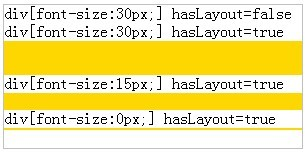
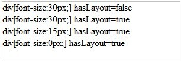

关于块级非替换元素的高度计算规则
W3C 规范中规定，对于没有生成 Block Formatting Context 的块级非替换元素的 auto 高度的计算依赖于它的普通流中子元素的高度。
而对于生成了 Block Formatting Context 的块级非替换元素的 auto 高度的计算则取决于非绝对定位子元素的高度。
总的来说，块级非替换元素的高度跟它的子元素的高度有关。
如果一个块级非替换元素没有任何子元素时，它的 auto 高度的计算值应该是0。
关于块级非替换元素高度计算规则，请参考 W3C CSS 2.1 规范 10.6.3 Block-level non-replaced elements in normal flow when 'overflow' computes to 'visible' 以及 10.6.7 'Auto' heights for block formatting context roots 中的内容。
关于 Block Formatting Context，请参考 W3C CSS 2.1 规范 9.4.1 Block formatting context 中的内容。
IE6 IE7 IE8(Q) 中触发 hasLayout 的空块级非替换元素的高度不为 0。
该问题可能会导致布局混乱。
| IE6 IE7 IE8(Q) |
|---|
在 IE6 IE7 IE8(Q) 中，如果空的块级非替换元素触发了 hasLayout ，那么它的高度不为零，并且这个高度跟 'font-size' 有关。然而，'font-size' 是 0 的块级非替换元素的高度也不是 0。
分析以下代码：
<style type="text/css"> div div { background-color: gold; } </style> <div
id="Container" style="border:1px solid silver; width:300px;"> div[font-size:30px;]
hasLayout=false <div id="DIV1" style=" font-size:30px;"></div> div[font-size:30px;] hasLayout=true <div
id="DIV2" style=" font-size:30px; zoom:1;"></div>
div[font-size:15px;] hasLayout=true <div id="DIV3" style=" font-size:15px; zoom:1;"></div> div[font-size:0px;] hasLayout=true <div
id="DIV4" style=" font-size:0; zoom:1;"></div>
<br/> </div>根据W3C标准，DIV1 、DIV2 、DIV3 和 DIV4 的高度应该是 0， container 中不应出现 金色的方块。
这段代码在不同的浏览器环境中表现如下：
| IE6 IE7 IE8(Q) | IE8(S) Firefox Opera Safari Chrome |
|---|---|
|  |  |
如果想让一个触发了 hasLayout 的块级非替换元素的高度为 0，可以给这个空的块级非替换元素增加一个空的注释块：
<div style="zoom:1"><!-- --></div>
另外，不让元素在 IE 中触发 hasLayout 也可以避免此 BUG 。
| 操作系统版本: | Windows 7 Ultimate build 7600 |
|---|---|
| 浏览器版本: |
IE6
IE7 IE8 Firefox 3.6 Chrome 4.0.302.3 dev Safari 4.0.4 Oprera 10.60 |
| 测试页面: | height_of_null_block_non_replaced_element.html |
| 本文更新时间: | 2010-07-21 |
hasLayout block non-replaced element font-size zero height